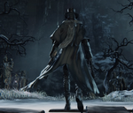

Pthumeru Ihyll Root Chalice |
||||
|---|---|---|---|---|
|
||||
Pthumeru Ihyll Root Chalice is a Chalice Item in Bloodborne. You can create this chalice dungeon by combining the materials listed below at one of the Tomb Altars in Hunter's Dream. This dungeon randomizes the Bosses, layout and loot.
Pthumeru Ihyll Root Chalice Information
- Depth: 5
- Area: Pthumeru
- Materials:
- Ritual Blood (5): 15
- Tomb Mold (5): 15
- Red Jelly: 2
- Blood Echoes: 11500
- Fetid Offering:
- Sage's Hair: 6
- Rotted Offering:
- Cursed:
Location
- Defeat the headless Bloodletting Beast in Great Pthumeru Ihyll Chalice (layer 2 boss)
Bosses
- Maneater Boar
- Merciless Watchers and Chieftan
- Beast-possessed Soul
- Keeper of the Old Lords
- Undead Giant
- Watch Dog of the Old Lords
- Pthumerian Descendant
- Pthumerian Elder
- Bloodletting Beast (Normal and headless)
Drops
| Item | Info | Glyph | Offering* | Location |
| Clockwise Metamorphosis | Max HP +15% | 94vijxbq | F/R/C | Layer 1 pre-lamp side area |
| 9vb3tzza | None | Layer 1 pre-boss side area; Oedon Writhe on L1 pre-lamp; Ring of Betrothal on L2 pre-boss side area; Blood Rock on L3 pre-boss side area; Communion on L4 pre-boss side area | ||
| zziz2qbx | F/R/C | Layer 3 pre-lamp side area; Also has Blood Rock | ||
| Communion | Max vials +5 | rg56w9w8 | F/R | Layer 1 pre-lamp side area |
| pmiqq34b | F/R/C | Layer 1 side area; Formless Oedon on L3 | ||
| bnjb9aap | s/S | Layer 2 side area | ||
| qtpuhk46 | F/R | Layer 2; Lake on L1 pre-boss | ||
| Formless Oedon | Max QS bullets +5 | 6aima33e | C | Layer 1 pre-lamp side area; Heir L2 pre-Lamp side area |
| dm3dhxf5 | s/S | Layer 1 pre-lamp side area | ||
| d2dygihn | Layer 1 pre-boss side area | |||
| wikifcsa | F/R/C | Layer 1 pre-boss side area | ||
| pmiqq34b | F/R/C | Layer 3; Communion on L1 side area | ||
| Heir | Blood Echoes from V.ATKs +60% | df235ysm | F/R | Layer 1 pre-lamp side area |
| 6aima33e | C | Layer 2 pre-lamp side area | ||
| fp3kttda | F/R/C | Layer 1 pre-lamp side area | ||
| zziz2qbx | F/R/C | Layer 3 | ||
| 9pvd8hw6 | None | Layer 3 pre-lamp side area; Logarius' Lost Wheel on L1 pre-boss; Lost Blade of Mercy on L2 pre-lamp, Lost Reiterpallasch on Layer 2 main area | ||
| Lake | Physical DMG reduction +7% | cx5uzizr | F/R/C | Layer 1 pre-lamp side area |
| qtpuhk46 | F/R | Layer 1 pre-boss side area; Communion on L2 | ||
| 7pn5jxn7 | F/R | Layer 1 pre-boss side area | ||
| 7yc94b3m | F/R/C | Layer 2 | ||
| Oedon Writhe | V.ATKs grant QS bullets +3 | 9vb3tzza | None | Layer 1 pre-lamp side area; Clockwise Metamorphosis on L1 pre-boss |
| 27fe7wh7 | F/R | Layer 1 pre-lamp side area | ||
| Lost Blade of Mercy |    |
zziz2qbx | F/R/C | Layer 1 pre-boss side area |
| 9pvd8hw6 | None | Layer 2 pre-lamp side area; Logarius' Lost Wheel on L1 pre-boss; Heir on L3 pre-lamp | ||
| sz73v83s | None | Layer 2 | ||
| yuwuijne | F/R/C | Layer 2 pre-boss side area; Ring of Betrothal on L2 main; Lost Burial Blade on L3 pre-lamp | ||
| Lost Burial Blade | |
rv86s442 | F/R/C | Layer 1 pre-boss side area |
| yuwuijne | F/R/C | Layer 3 pre-lamp side area; Ring of Betrothal On L2 main; Lost Blade of Mercy on L2 pre-boss | ||
| wic63yn8 | None | Layer 2; Lost Chikage on L2 pre-lamp area | ||
| 5543imxn | R | Layer 4; Also has Lost Reiterpallasch | ||
| Lost Chikage |  |
yrim6m23 | F/R | Layer 1 pre-boss side area |
| wic63yn8 | None | Layer 2; Lost Burial Blade on L3 | ||
| 2ac8vumx | F/R | Layer 2 | ||
| Logarius' Lost Wheel | |
74hjsy7a | F/R/C | Layer 1 pre-lamp side area |
| 9pvd8hw6 | None | Layer 1 pre-boss side area; Lost Blade of Mercy on L2 pre-lamp; Heir on L3 pre-lamp | ||
| dm3dhxf5 | s/S | Layer 1 pre-boss side area | ||
| y8tqin2h | F | Layer 2 pre-boss side area | ||
| ars6u9q7 | F/R | Layer 3 | ||
| Lost Reiterpallasch | |
pwmf22gu | F/R/C | Layer 1 pre-lamp side area |
| rra4n2eq | F/R | Layer 1 pre-boss side area | ||
| 5543imxn | R | Layer 4; Lost Burial Blade on L4 | ||
| p5hbjuwy | Inactive | Layer 1 pre-lamp side area | ||
| 57qjvat6 | Inactive | |||
| Ring of Betrothal |

|
r9rayjjs | F/R/C | Layer 1 pre-lamp side area |
| 5bfq7tyk | F | Layer 1 | ||
| dm3dhxf5 | s/S | Layer 2 side area | ||
| yuwuijne | F/R/C | Layer 2 main area; Lost Blade of Mercy on L2 pre-boss; Lost Burial Blade on L3 pre-lamp | ||
| w8dscrx5 | None | Layer 3 side area; Communion and Heir on first 2 layers | ||
| Blood Rock |

|
jrwffkyp | None | Layer 1 pre-lamp side area |
| 75pirdav | Inactive | Layer 1 pre-lamp side area | ||
| zziz2qbx | F/R/C | Layer 2 pre-boss side area | ||
| hdmg5dzw | s/S | Drop from Layer 3 boss (Pthumerian Descendant) | ||
| u6d8itwm | Inactive |
* F=Fetid; R=Rotted; C=Cursed; s=Sinister Chalice; S=Sinister Offering
Notes
- All items are randomly generated and are therefore not guaranteed when creating a new root chalice dungeon
- Use Chalice Glyphs listed above to find guaranteed item drops
- You must have made a chalice of the same type with at least the original offerings before you can search and join a chalice glyph
- If a chalice becomes inactive or is removed from the host's game, the glyph will no longer work and this page should be updated
Trivia
Trivia goes here
 Anonymous
AnonymousBest place for echos imo, one floor clear will give 1 mil or close to. Just do root with every offering, great one coldbloods spawn too. Idk if ng+ effects chalice echo gain though cause my character was on his 3rd run around last I did the dungeon. Btw I got 1 mil with only 1 moon rune
- Anonymous
On the d2dygihn glyph, meant for the Formless Oeadon Rune, I also found the Lost Reiterpallasch even though it doesn't say it. I was in L3, after the lamp, before I found the Lever.
- Anonymous
I seriously want to thank all of the wiki team for making this extremely useful Glyphs available for us, I got all of the 72 runes thanks to you.
- Anonymous
"Simply" defeat the Headless Bloodletting Beast and it's all yours :) Yeah, right
- Anonymous
9pvd8hw6 also has the lost reitersplatsch on L2 main area... It wasn't listed with the other stuff.
- Shinnok789
"You must have made a chalice of the same type with at least the original offerings before you can search and join a chalice glyph" Not true. I tried to join the famous by68zgaj but i didn't meet the requirements. I did a Pthumeru Ihyll Root Chalice with no offerings, entered it, exited and tried to join by68zgaj again... got the same message. Then i remade the Pthumeru Ihyll Root Chalice but with F/R/C offerings. Retried to join the by68zgaj and this time it worked.
- Anonymous
got one that gave me a uncanny burial blade (even through i didn't even beat gherman) on layer 2 pre candle room, glyph : a7vzqef3
- Anonymous
Is it possible to get a burial blade before the duel with Gherman? And how early can I get it?
- Anonymous
- Anonymous
how could it be I created this chalice's dungeon with the 'FRC' as offerings & I received none of the items you put on there, not even the bloodrock WTF ? it was very hard because my health was divided... how can I have the same loots as yours ? thanks for lettin' me know !
- Anonymous
I found Clockwise Metamorphosis in Layer 1 pre-lamp side area. Glyph: ubafpfz2 (No additional rites).
- Anonymous
9vb3tzza has Bloodrock on layer 3 pre boss. Not registered, but, hey, maybe someone wants to add it, so...
I scoured all three Bloodborne wikis as well as Reddit for glyphs and the details about those glyphs. Then I checked every single one of them to see if they were still active, some of them twice just to make sure they were really dead. This is what I came up with; the fastest paths to all the Runes and Lost / Uncanny weapons as well as all the gem farming glyphs that are still active. Enjoy! docs.google.com/spreadsheets/d/1O8N7xnoSS935oL6eqfqDngmK0bUqqYpy1Ytoc5_cwwQ
Cannot find this sinister root chalice, anyone have glyph for the messengers? I am growing bored with the search bearing no fruit. -_-
- Anonymous
I entered two of the glyphs listed to find bloodrocks but it only gives me great one's wisdom, and it's the first time I entered these glyphs do guys know why?
- Anonymous
Xs3yj8zp.
Just done the first treasure room found ring of betrothal. Don't plan on doing any more of this area, until my friend creates a dungeon. Let me know what you find gut feeling is its a good one. F/R/C offering ihyll root.
- Anonymous
So I just got Rom as the layer 3 boss even though she's not listed as one of the potential bosses here?
- Anonymous
FRC ihyll. 26n5z4gf
Lost blade of mercy: pre 1st lamp, side door, golden chest.
Lost Chikage: pre 2nd lamp, side door, downstairs, right of cave past rats and sage, golden chest
Great One's Wisdom: pre 3rd boss. Not sure which item it's supposed to be, might be something I already have.
- Anonymous
Rom can be as a boss in Pthumeru Ihyll Root Chalice also. Add that info.
- Anonymous
The glyph d2dyghin with the communion and formless oedon has an awesome bloodgem farming spot in the layer one room with the ladder platform and the two labyrinth warriors below. Those labyrinth warriors one with sword and shield (sword is on fire) and the greatsword one (also has flaming sword) can drop cursed tempering bloodgems levels 5 and 6. These gems can have a max of 22.5% physical and ad 7.5, 8.5, and 9.5 flat physical as well. Farming them is very easy aggro them and they will climb up the ladder simply charge attack them off and they will keep climbing up over and over again. Just be wary of the left an pthumerian gunner is patrolling and he could snipe you if you are not careful. Otherwise yeah just kill the warriors go back to the lamp 2 meters away and come back and do it again. Very easy to do hope this helps!
- Anonymous
For the Formless Oedon glyph d2dygihn a +5 communion rune is in the pre layer one room.
- Anonymous
The third option for the Lost Burial Blade is fake. I checked every treasure room of every floor, its not there.
- Anonymous
Pthumeru Ihyll Root Chalice Glyph:9vb3tzzaBlood Rock:Layer 3 pre-boss side area
- Anonymous
- Anonymous
Anyway glyph is hxg66qm5 foetid and rotted , knock yourselves out
- Anonymous
- Anonymous
Glyph daq8p2rm No offerings. 4 levels. Very cool dungeon. Found ring on 3rd. - UNCLE B1LLY
- Anonymous
- Anonymous
F/R/C Layer 1 pre-lamp side area - 75pirdav Pre-Boss area is just Ritual Blood (5), didn't bother to check the other floors. Feel free to add to the table above if you guys want. :)
- Anonymous
Can someone tell me why the glyph "yuwujine" doesn't work even if i have the requirements ? I have everything and yet i can't use it .if not ,can someone give me a glyph for ring of bothral and lost blade of mercy \burial blade ?
- Anonymous
- Anonymous
- Anonymous
I'm looking for the FOrmless Oedon rune that gives +5 QSB, and the Oedon Writhe rune that gives +3 QSB per VA, and I was told that they were in this dungeon. I've already gone through twice, one with all three offerings, and once with none; can someone tell me what combination of offerings is best to get these, or a glyph I can use to attain them? Thank you, and have a lovely New Year.
- Anonymous
Can anyone let me know the location of the lost burial blade in wic63yn8? I can't find it myself
- Anonymous
- Anonymous
Glyph: v4tammxg F/R/C Pthumeru Ihyll Lost Reiterpallasch is on layer 2. I believe it's either pre lamp or pre boss Lake is on layer 3. In a sarcophagus guarded by skeleton guys and a mad sage A heavy abyssal blood gem is dropped by the headless bloodletting beast in layer 3. The stats are: STR scaling +65 Add physical attack +12.7 attack vs kin down -12.2% There is another rune on layer 3 in a sarcophagus guarded by a merciless watcher, but I'm not sure what it is as I picked up a great one's wisdom. It may either be clockwise metamorphis or oedon writhe. The chalice has 4 layers. Layer 1: Keeper of the old lords Layer 2: Man-eater Boar Layer 3: Headless bloodletting beast Layer 4: Bloodletting beast with the head The chalice is pretty difficult as it is infested with witches. But, they drop pretty good waning cursed tempering blood gems. Also, there is a bath messenger in layer 4 near the lamp. In a dark area, similar to the one in layer 3 normal Ihyll but it's guarded by a snatcher
- Anonymous
- Anonymous
i have a question, i used the glyph for the lost burial blade / raiterpallasch which is the 5543imxn one. i went through the dungeon and finally got to the treasure room to get the weapon and i got the raiterpallasch (would have prefered LBB). if i wanted the lost burial blade would i have to recreate the chalice dungeon and get back to the treasure room to see if i get the burial blade or can i keep this one and wait? i ask only because i decided to return to the treasure room for reasons even i dont know and when i looked at the chest there was an item in it. i picked it up and it was another reiterpallasch. could i possibly wait and see if it spawns a burial blade or will it only spawn that weapon? (i returned after being signed out for a while)
Rotted Pthumeru Chalice Fetid and Rotted Offering Glyph: 6nwerhdz First floor First treasure path; ritual blood only Treasure path before boss "Formless Oedon +5" top floor Boss: undead giant w/ canon Second Floor Treasure path before boss "Clockwise Metamorphosis +15% hp" Boss: Pthumerian Descendants Final Floor First treasure path; ritual blood only Blood Rock deep in level Treasure path before boss only tomb mold Boss: Bloodletting Beast Enjoy :D
- Anonymous
- Anonymous
9pvd8hw6 - Pre-layer areas of each layer (1 - Wheel, 2 - BoM, 3 - Heir). No offerings
cx5uzizr doesn't seem to work, either typo or inactive now
0
+10
-1